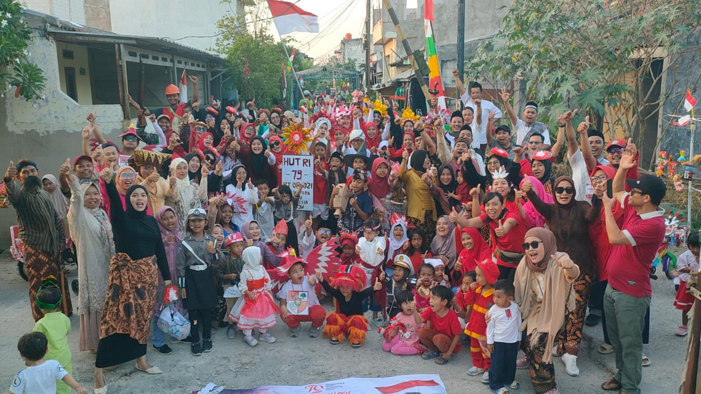

Selamat datang di PANDU
RT 08 lebih dekat dengan warganya.
Informasi, layanan, agenda, kas, UMKM, dan berbagai kebutuhan warga Villa Indah Pulo Timaha tersedia dalam satu portal.

Agenda terdekat
SemuaMemuat agenda...
Pengumuman
SemuaMemuat informasi...
Layanan cepat
Assalamu’alaikum
Selamat datang, warga RT 08 / RW 021
Portal ini adalah pusat informasi, layanan, dan administrasi warga Villa Indah Pulo Timaha. Mari bersama menjaga kekompakan dan kemajuan lingkungan kita.
—Kepala keluarga
—Agenda aktif
—Pengumuman